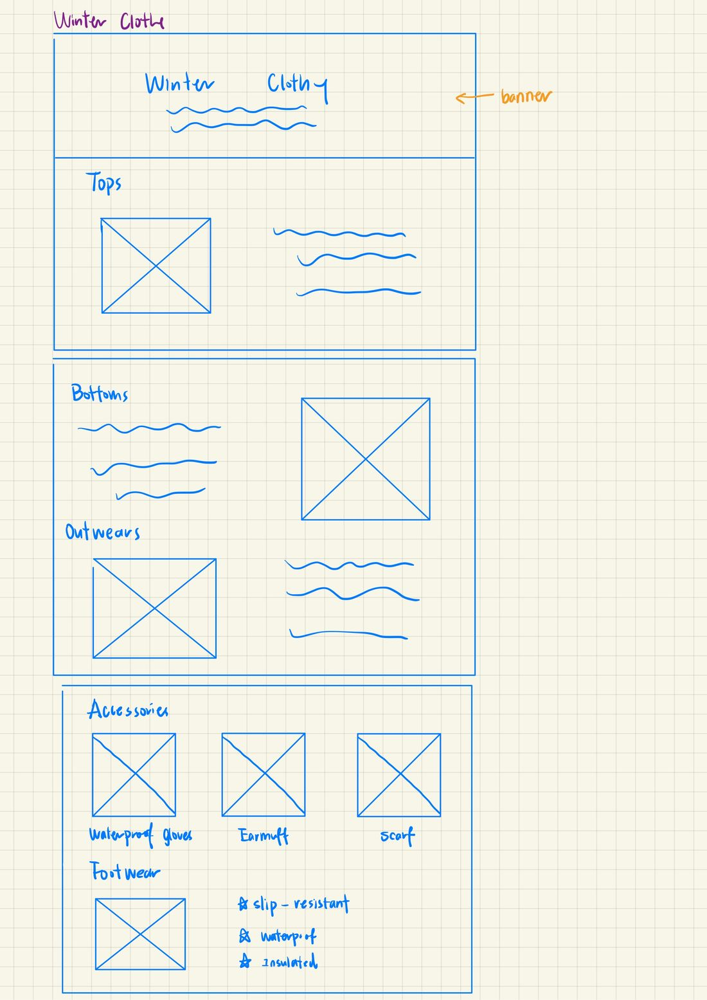
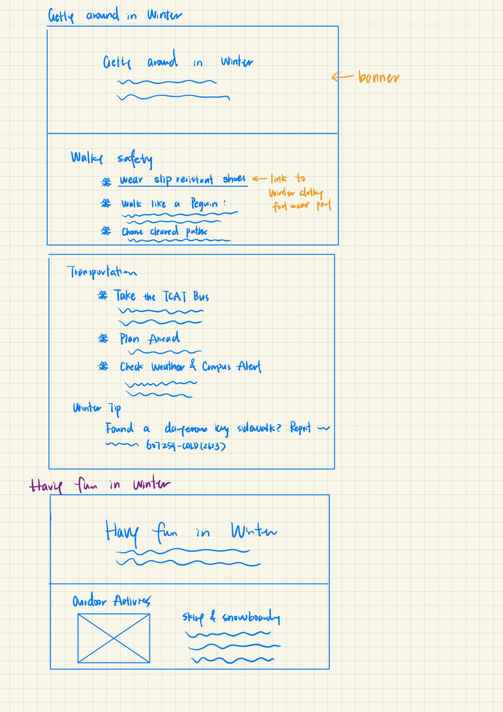
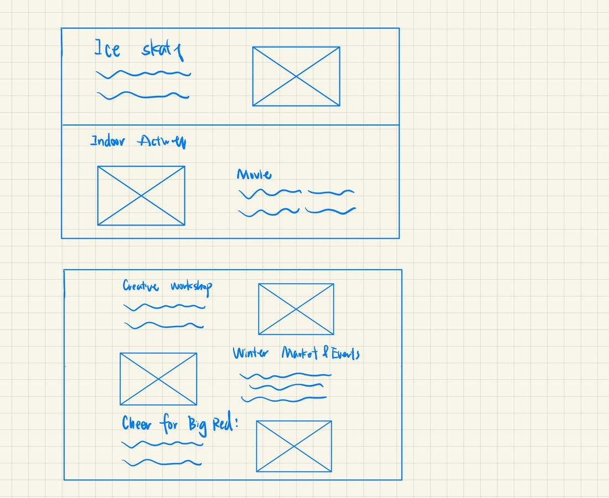
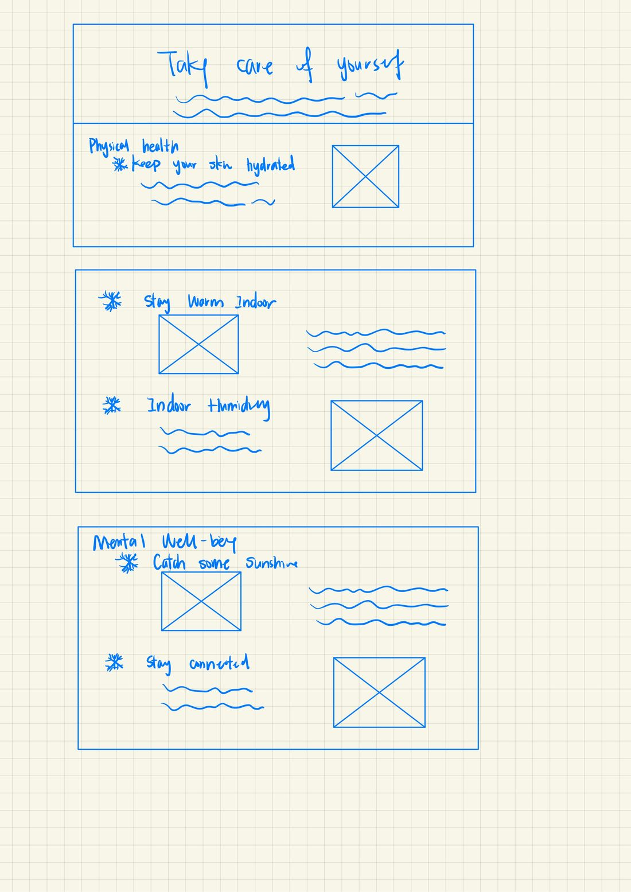
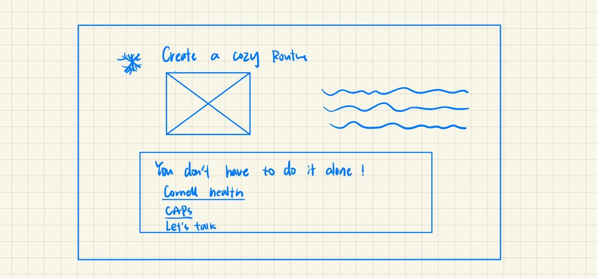

Winter Clothing
Tops, bottoms, and outerwear with layering tips, then accessories and footwear that is slip-resistant, waterproof, and insulated.

Getting Around in Winter
Walking safety and transportation: slip-resistant shoes, choosing cleared paths, taking the TCAT bus, checking weather and campus alerts, and how to report an icy sidewalk. The same sketch starts the Having Fun in Winter page.

Having Fun in Winter
Outdoor activities such as skiing, snowboarding, and ice skating, then indoor ideas: movies, creative workshops, winter markets and events, and cheering for the Big Red.

Taking Care of Yourself
Physical health and mental well-being: hydrated skin, staying warm indoors, indoor humidity, catching some sunshine, staying connected, and a cozy routine, ending with links to Cornell Health and other support.


Design rationale
The site organizes winter preparation into clear categories based on the needs from my interviews, so students can quickly find what they are looking for. Familiar patterns, such as a navigation bar, clickable cards with icons, and clearly separated sections, make it easy to use. The layout moves from horizontal arrangements on wide screens to stacked content on narrow ones, and winter imagery, a consistent blue palette, and cozy photos make the site feel welcoming, so students look forward to winter instead of only worrying about the cold.